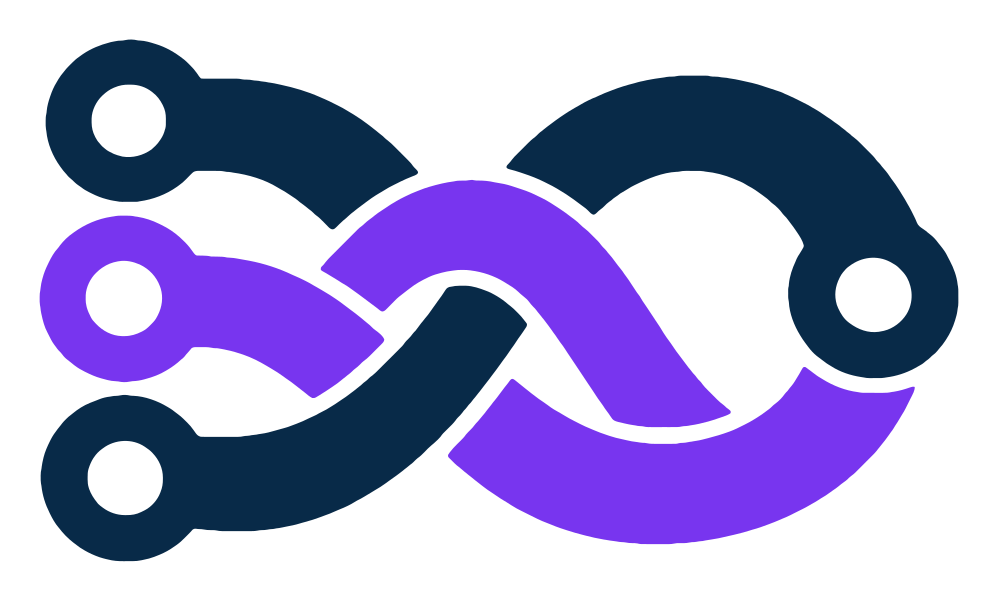
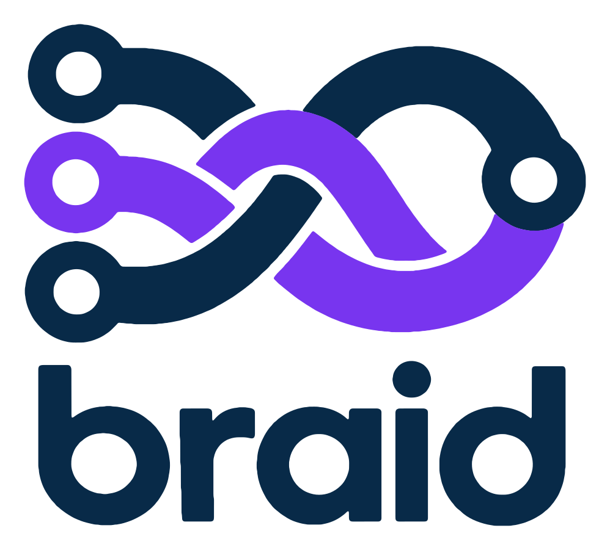
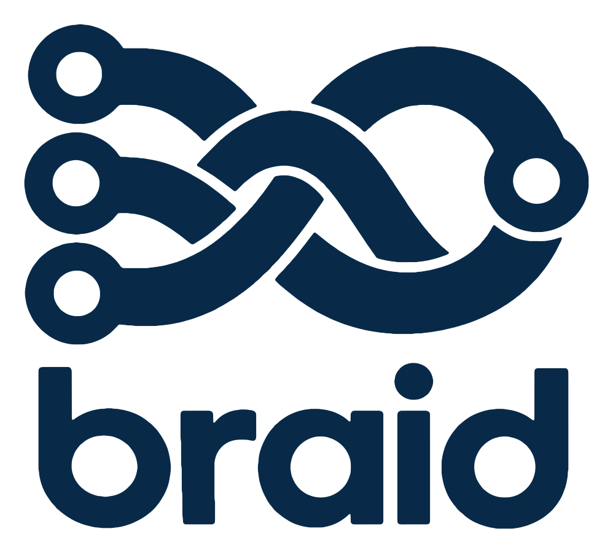
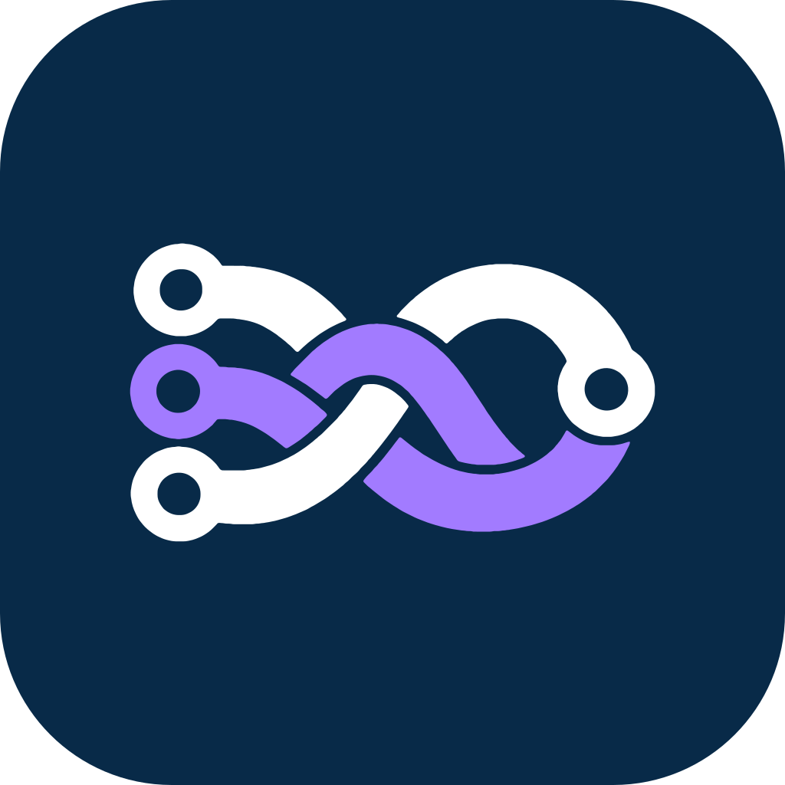
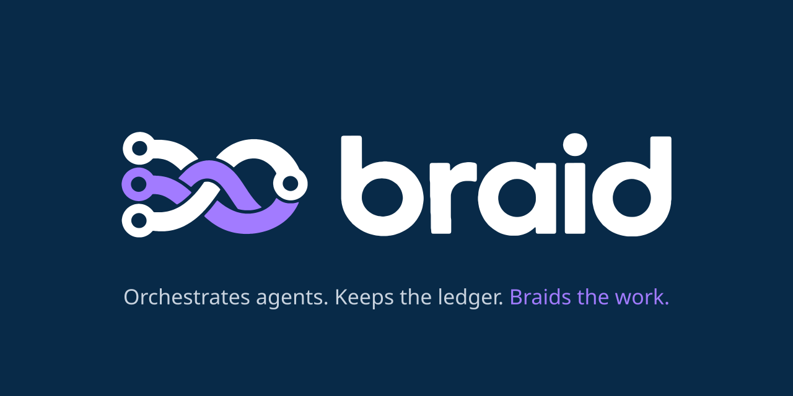

Brand identity guidelines
01 · The idea
braid orchestrates coding agents. It splits a goal into braids and strands, hands each strand to an agent, and keeps a ledger of every step.
The symbol draws that work. Three strands start at their own points, cross over and under, and come together in one loop.

Each strand starts at a ring, like a commit in a history: a recorded point in the ledger.
Over-under crossings show agents working side by side without colliding.
The loop on the right is where the strands meet again: work merged back.
02 · Logo

The default. Use it wherever there is room: covers, README headers, slides, merchandise.
Wide, short spaces: site headers, banners, letterheads.
Avatars, app icons, favicons, stickers.
When the symbol is already close by.
03 · Logo colour versions
White and light backgrounds. Always the first choice.
Navy and other dark backgrounds. Violet becomes Violet Light.

One-colour print, embossing, engraving.

Violet, photos and other colour fields with enough contrast.
04 · Clear space and size
x = the outer diameter of one endpoint ring. Keep at least x of empty space on every side. The SVG artboards include a small margin; measure clear space from the artwork, not the file edge.
| Lockup | Screen | |
|---|---|---|
| Primary | 120 px wide | 30 mm |
| Horizontal | 140 px wide | 35 mm |
| Symbol | 24 px wide | 8 mm |
| Wordmark | 64 px wide | 16 mm |
Below 24 px, use favicon.svg or the favicon PNGs.
Shown at minimum size.
05 · Colour
#082A48
RGB 8 42 72
CMYK 100 75 35 50
Primary. Wordmark, two strands, text.
#7835EF
RGB 120 53 239
CMYK 65 78 0 0
Accent. One strand, links, highlights.
#A27BFF
RGB 162 123 255
Violet on dark.
#F4F2FB
RGB 244 242 251
Light surfaces.
#5A6B80
RGB 90 107 128
Secondary text.
Contrast (WCAG 2.2): Navy on white 14.6:1 · Violet on white 5.9:1 · Violet Light on Navy 4.8:1 · Slate on white 5.5:1. Don't set Strand Violet on Navy (2.5:1); use Violet Light. CMYK values are starting points; proof before print.
06 · Typography
The wordmark is custom lettering, supplied as outlines. Never retype it in a font.
Poppins shares the wordmark's round, geometric shapes. Use it for headings, UI and body copy: 700 for headings, 600 for subheads, 400 for body.
Cascadia Code is for commands, ids, ledger entries and anything a user types.
Both are free under the SIL Open Font License: Poppins from Google Fonts, Cascadia Code from github.com/microsoft/cascadia-code.
braid hands each strand to an agent, arranges review and reports back when a PR is ready to merge.
07 · Misuse
Stretch or squash it.
Recolour the strands.
Rotate or tilt it.
Add shadows, glows or bevels.
Retype the wordmark.
Put the colour logo on low-contrast colour.
Use busy backgrounds.
Rearrange the parts.
08 · Applications

App icon and avatar
Icon sizes down to a 16 px favicon

GitHub social preview, 1280 × 640